Abstract
Diffusion policies have recently emerged as a powerful paradigm for representing complex action distributions in reinforcement learning (RL). However, their application to online RL remains limited by the challenge of scalable training in the absence of ground-truth data, where standard optimization techniques such as score matching are not directly applicable. In this work, we introduce a highly efficient algorithm for optimizing diffusion policies by leveraging recent advances in stochastic optimal control. Our approach is based on adjoint matching, which enables simulation-free training and circumvents the need for explicit likelihood estimation or costly backpropagation through the diffusion process. Furthermore, we propose several extensions that improve the robustness and stability of the method in practical settings. Empirical results demonstrate that our approach achieves competitive performance while significantly reducing computational overhead, making diffusion policies more viable for online RL scenarios.
Method
We frame diffusion policy optimization for maximum entropy RL as a stochastic optimal control problem and adapt adjoint matching to solve it. The resulting method, Adjoint Matching Diffusion Policy (AMDP), has three advantages:
- It uses a highly scalable regression objective involving the \(Q\)-score, similar to score-matching methods but theoretically grounded for RL.
- It avoids costly backpropagation through the diffusion process, significantly reducing memory requirements.
- Building on reciprocal adjoint matching, the optimization is simulation-free. Only the actions are needed, and they can be stored and reused for multiple gradient updates.
Diffusion policy as a controlled SDE
The policy defines actions implicitly through a state-conditioned SDE with generation time \(\tau \in [0,1]\). The SDE is solved anew for every environment state, starting from a deterministic initial condition:
The goal is a control \(u\) whose terminal distribution matches the maximum entropy target \(\pi^*(a|s) \propto \exp(Q(a,s)/\alpha)\).
The AMDP objective
Adjoint matching (Domingo-Enrich et al.) solves this control problem with a fixed-point regression loss whose unique fixed point is the optimal control. Its reciprocal variant (Havens et al.) replaces simulated paths by terminal samples from the current control and intermediate states from the reference process. Conditioned on \(X_1\), these intermediate states follow a known Gaussian that can be sampled directly. This gives the loss
where \(\bar u\) is the control with gradients stopped. Neither the \(Q\)-function nor the SDE needs to be re-evaluated for the intermediate states.
Error function action squashing
Instead of the common \(\tanh\), we squash actions into \([-1,1]^d\) with a scaled error function, which is numerically more stable in our setting:
With this \(k\), the Jacobian determinant is proportional to the Gaussian reference marginal \(\Pi^0_1\). The correction term between them is therefore constant, its gradient vanishes, and the objective reduces to (2).
Tractable entropy for policy evaluation
The marginal entropy of a diffusion model is generally intractable. We use a lower bound that is tight if and only if the controlled process lies in the reciprocal class of the reference process, which holds at the fixed point of the policy improvement step:
It replaces the entropy in the soft Bellman backup and enables automatic temperature tuning:
Trust-region updates
In on-policy RL the target distribution shifts rapidly, so we constrain how far the control can move from its previous iterate \(u_{\mathrm{old}}\):
with the expectation as in (2). We optimize the Lagrangian \(\mathcal{L}^s_{\mathrm{AMDP}}(u) + \lambda(\mathcal{L}^s_{\mathrm{TR}}(u) - \varepsilon)\), which preserves the unique fixed point of (2) for any \(\lambda \geq 0\). The off-policy experiments use (2) without a trust region.
Algorithm sketch
Input: initial \(u\) and \(Q\). For each iteration:
- Collect and store \((s, a, s', r, X_1)\).
- Update \(Q\) via (5).
- Compute and store \(\nabla_x Q(f_{\mathrm{erf}}(X_1),s)\).
- Update \(u\) via (2), or via the Lagrangian of (6).
Results
We evaluate AMDP on 63 highly parallelized environments from MuJoCo Playground, ManiSkill and HumanoidBench in the on-policy setting, and on 7 high-dimensional dog and humanoid tasks of the DeepMind Control (DMC) suite in the off-policy setting. Every experiment is repeated for ten seeds. We report the interquartile mean (IQM), with shaded regions showing 95% confidence intervals from stratified bootstrapping.
On-policy performance
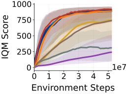
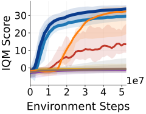
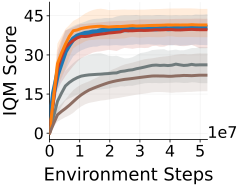
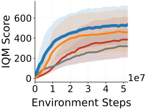
- MJX DMC: AMDP matches DIME's performance and converges slightly faster than REPPO in terms of sample efficiency.
- MJX Humanoid: AMDP starts learning significantly faster than all baselines, although REPPO eventually surpasses its final performance slightly. Reducing stochasticity during evaluation with Best-of-N sampling (AMDP BoN) lifts performance above all baselines.
- ManiSkill3: AMDP, DIME and REPPO perform similarly, whereas PPO and SPO perform worse.
- HumanoidBench: AMDP outperforms all baselines by a large margin even without Best-of-N sampling.
Off-policy performance
On the high-dimensional DMC dog and humanoid tasks, where sample efficiency is crucial, AMDP matches DIME's performance and converges slightly faster on the dog environments. This shows that the adjoint matching objective is a competitive policy optimization loss against DIME's reverse KL loss in the off-policy setting.
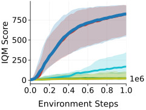
Wallclock efficiency and scaling
AMDP has a roughly 10% update overhead compared to the fast Gaussian baseline REPPO, independent of the number of diffusion steps. Including diffusion sampling, a full iteration with the default 16 steps is 5% slower than REPPO on G1JoystickRoughTerrain and 36% slower on the extremely fast CartpoleBalance simulation, where sampling is most noticeable. In contrast, the reverse KL update is about ten times slower at 16 diffusion steps and over 70 times slower at 128.
| Environment | Phase | REPPO | AMDP | Rev. KL | ||
|---|---|---|---|---|---|---|
| 16 steps | 128 steps | 16 steps | 128 steps | |||
| CartpoleBalance | Environment rollout | 84 | 404 | 2 738 | 404 | 2 751 |
| Network update | 948 | 994 | 991 | 9 944 | 71 659 | |
| G1JoystickRoughTerrain | Environment rollout | 9 605 | 10 031 | 13 097 | 10 041 | 13 129 |
| Network update | 1 014 | 1 113 | 1 117 | 11 421 | 82 101 | |
As a proof of concept, we also train diffusion policies with up to 106M parameters, approximately 300 times larger than the default. With the critic size kept fixed, scaling only the actor does not yield large performance improvements, but it validates that AMDP can train much larger actors efficiently. Its memory footprint is independent of the number of diffusion steps and small enough to allow training a 1B-parameter actor on a single GPU.
Ablations
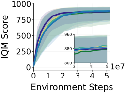
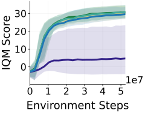
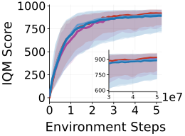
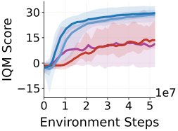
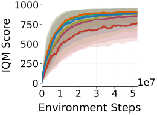
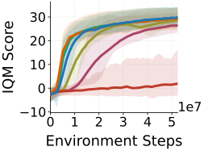
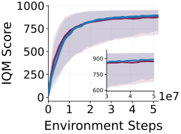
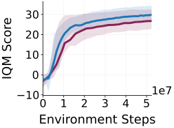
- Objective and SDE: Using DIME's reverse KL objective with our SDE and no trust region matches DIME, although DIME shows reduced variance. An Ornstein-Uhlenbeck reference process with our loss (AMDP-OU) performs comparably, so AMDP's performance is not inherent to the chosen SDE.
- Diffusion steps: Significantly fewer steps can help sample efficiency, at the cost of a small final performance degradation on the DMC tasks. The humanoid tasks require more steps and improve slightly with the added precision.
- Trust region: Performance drops significantly without a trust region (\(\varepsilon = \infty\)), whereas a smaller bound (\(\varepsilon = 0.01\)) converges more slowly.
- Squashing: \(\tanh\) performs similarly on the low-dimensional control tasks, but the error function improves performance significantly on the high-dimensional humanoid tasks.
Limitations
AMDP uses a deterministic initial condition, whereas diffusion policies pretrained on offline data typically use a Gaussian prior. The Ornstein-Uhlenbeck extension lifts this restriction, but a full offline-to-online pipeline is left for future work. We also do not show that larger or more expressive actors improve performance, and whether jointly scaling actor and critic helps remains open.
Code
The code is available at github.com/serathilg/amdp, with JAX and PyTorch implementations of AMDP and support for MuJoCo Playground, ManiSkill3 and HumanoidBench. A quick start, with uv:
git clone --recursive https://github.com/serathilg/amdp.git && cd amdp
uv sync # core: JAX + PyTorch, MuJoCo Playground, ManiSkill3
uv sync --extra humanoid-bench # additionally: HumanoidBench
uv run src/jaxrl/amdp_reppo.py env=mjx_dmc env.name=CartpoleSwingup
uv run src/torchrl/amdp_reppo.py env=maniskill env.name=PickCube-v1See the repository's README for all entry points, configuration options and the archived experiment configurations.
BibTeX
@inproceedings{thilges2026scalable,
title = {Scalable Maximum Entropy Reinforcement Learning for Diffusion Policies via Adjoint Matching},
author = {Serge Thilges and Onur Celik and Denis Blessing and Emiliyan Gospodinov and Gerhard Neumann},
booktitle = {The Fortieth Annual Conference on Neural Information Processing Systems},
year = {2026},
url = {https://openreview.net/forum?id=h8DYJlF7Jt}
}